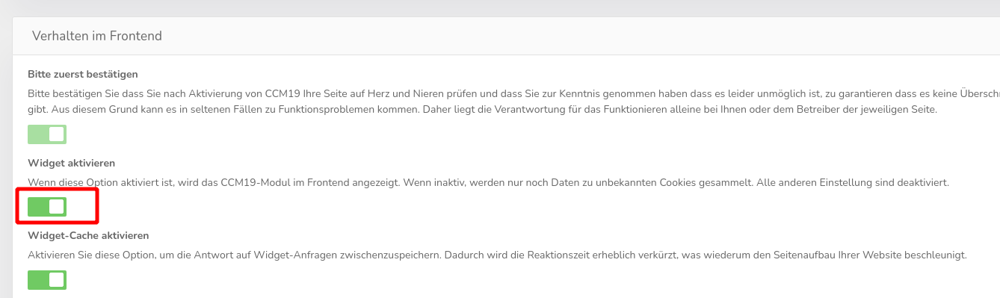
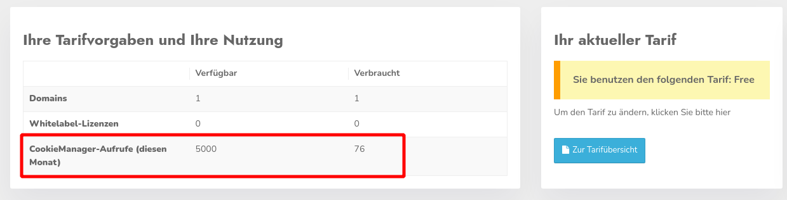

Wenn das Banner trotz Einbindung des Codes in den <head>-Breich Ihrer Seite nicht angezeigt wird, kann das mehrere Gründe haben. In der Regel ist das Problem aber leicht zu beheben. Die häufigsten Ursachen sind die folgenden:
Es kann passieren, dass das Frontend-Widget bei der Einrichtung nicht automatisch aktiviert oder versehentlich deaktiviert wurde. Überprüfen Sie deswegen unter dem Menüpunkt „Frontend-Verhalten“, ob das Widget wirklich aktiv ist:

Über das Code-Snippet wird abgeglichen, ob CCM19 auf der Domain eingesetzt werden darf. Dafür muss auf dem im Skript genannten Server eine Konfiguration für die Domain vorhanden sein. Prüfen Sie also einmal, ob die Domain, die Sie in CCM19 angegeben haben, mit der Domain der Webseite, auf der das Banner ausgegeben werden soll, exakt übereinstimmt. Achten Sie dabei auch auf die korrekte Verwendung von http:// und https://.
Wenn in Ihrem Tarif keine Impressionen mehr verfügbar sind, wird das Banner nicht mehr angezeigt. In den Entwicklerwerkzeugen des Browsers wird unter dem Punkt „Console“ eine Fehlermeldung mit dem Hinweis „Quota exceeded“ ausgegeben. Sie können den aktuellen Status aber auch im CCM19-Konto überprüfen. In der Seite nach dem Login sehen Sie die gebuchten Tarife und Informationen darüber, ob für den laufenden Monat noch CCM19-Aufrufe zur Verfügung stehen.
